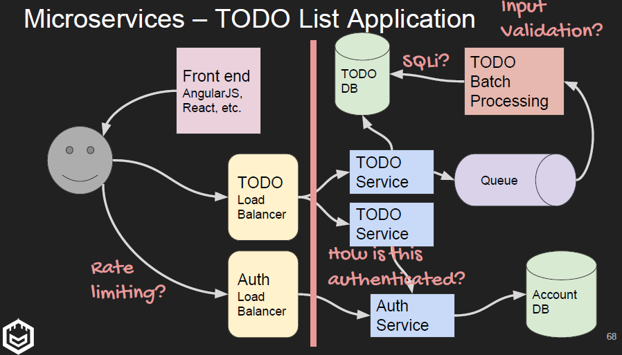

What are they
Small services that do a few things, usually centered around a 'business area'
Communicates exclusively via API, usually REST and JSON, eg RabbitMQ, Amazon's SQS, etc
Why are they used
Faster development time
Logical separation, like code into functions
Easily monitorable
Services can remain partially up during disruptions
Easy to test and release automatically
